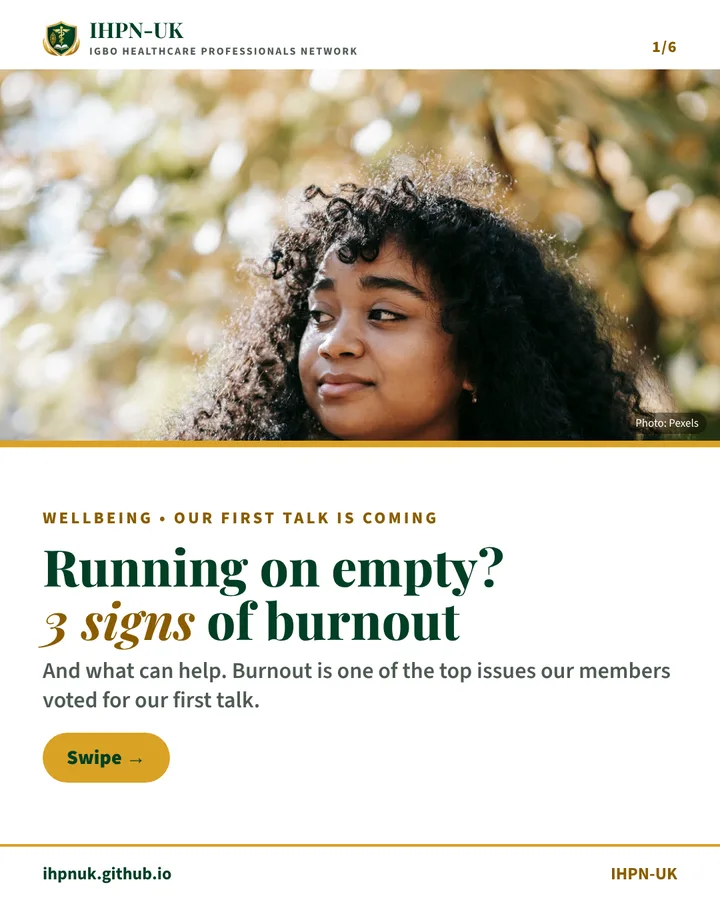
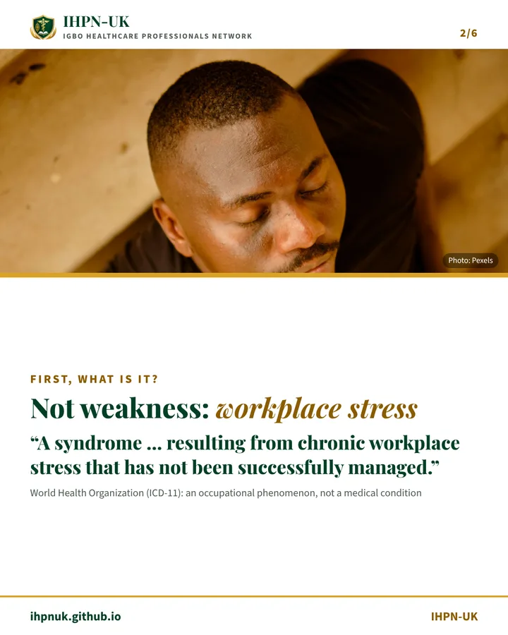
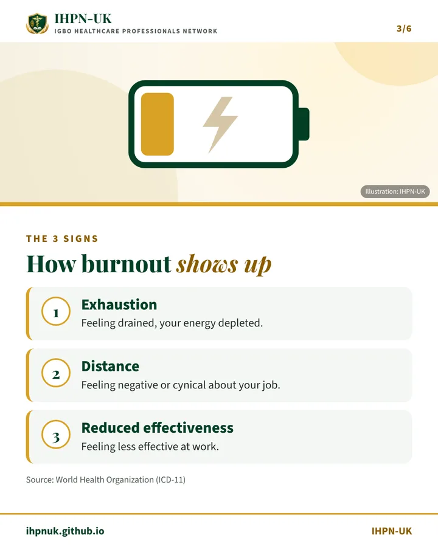
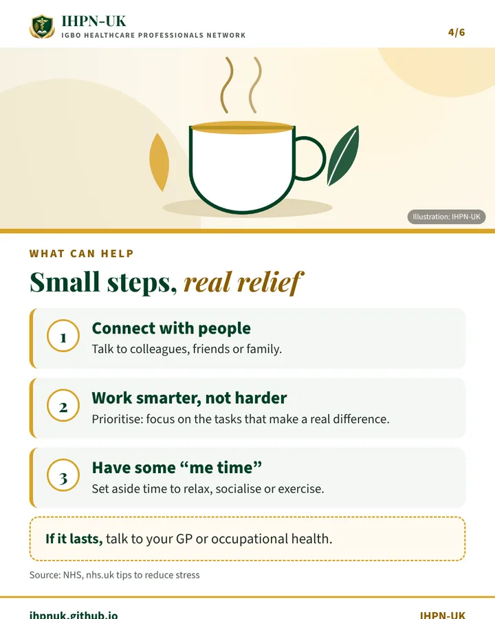
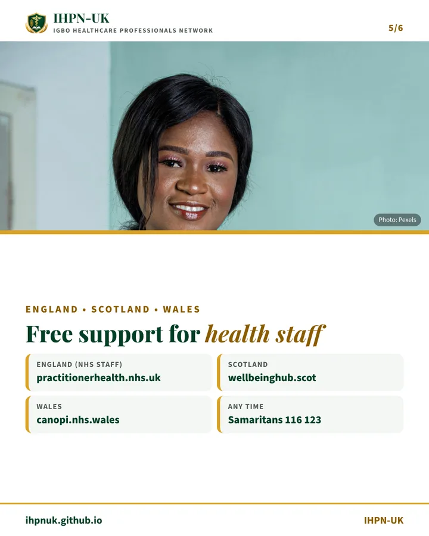
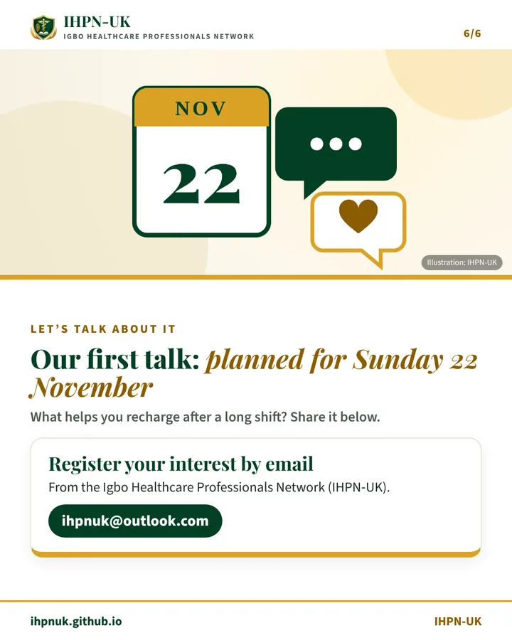

Burnout is one of the issues our members most want to talk about. Here’s how to spot it, small steps that help, and where health staff can get free support.
The 3 signs of burnout
The World Health Organization describes burnout as “a syndrome conceptualized as resulting from chronic workplace stress that has not been successfully managed”. It’s an occupational phenomenon, not a medical condition, and it isn’t weakness.
ExhaustionFeeling drained, your energy depleted
DistanceFeeling negative or cynical about your job
Less effectiveFeeling less effective at work
Slides: 3 signs of burnout






Swipe or scroll sideways to see all 6 slides.
Small steps that help
The NHS suggests simple steps: connect with people you trust, work smarter, not harder by focusing on the tasks that make a real difference, and make some “me time” to relax, socialise or exercise. If it lasts, talk to your GP or occupational health.
Watch: 3 signs of burnout in 60 seconds
Our one-minute video, with captions. The voiceover is an AI-generated voice and the photos are stock images.
Read the video transcript
Voiceover: Running on empty? Here are three signs of burnout, and what can help. Burnout isn’t weakness. The World Health Organization describes it as the result of chronic workplace stress that hasn’t been successfully managed. The three signs are exhaustion, feeling distant or negative about your job, and feeling less effective at work. Small steps help. Connect with people. Work smarter, not harder. And make time for yourself. If it lasts, talk to your GP or occupational health. There’s free support for health staff in England, Scotland and Wales. And Samaritans are there any time, on 116 123. Burnout is one of the topics for our first talk, pencilled in for Sunday 22 November. What helps you recharge? Tell us below, and apply to join the Igbo Healthcare Professionals Network, IHPN-UK, at the link in our bio.
On screen: the same six slides as the carousel above, with each point appearing as it is spoken, and an end card with the Igbo Healthcare Professionals Network (IHPN-UK) name and an apply-to-join button. The video was first shared on Instagram, so it mentions the link in our bio: on this site, use the Apply to join button below.
Free, confidential support
If you’re struggling, you don’t have to manage it alone.
Members hear about our talks, events and opportunities, including our mental health talk, planned for Sunday 22 November. You can ask questions and get support in our members’ group, and connect with Igbo healthcare professionals across the UK.
Membership is open to healthcare professionals of Igbo heritage who live and work in the UK.